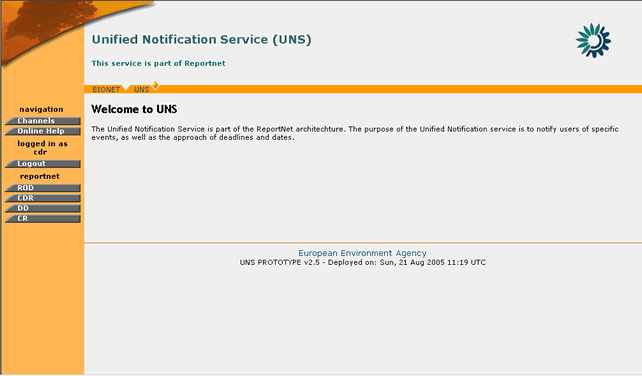
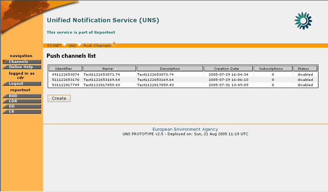
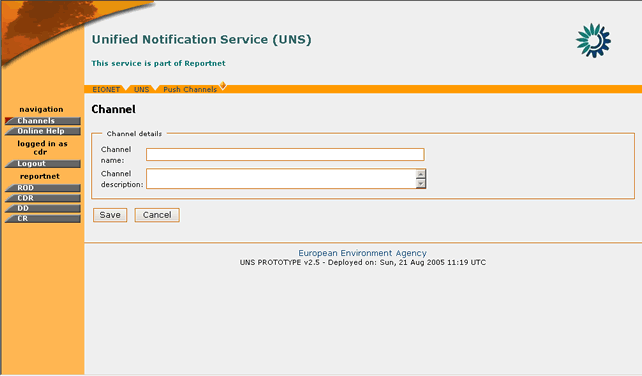

The group of RPC users represent external systems which interact with the UNS application.
These client applications may perform the following operations on UNS:
In the context of the UNS, XML-RPC can be used to send RDF formed events data to the UNS, in order to create PUSH channels that will be used for the insertion of events as well as to subscribe users. Those operations are allowed only to the registered UNS RPC users. UNS RPC users are allowed to operate only on channels created by them.
The UNS XML RPC Router is: http://<<web_root>>/receiver
There are currently five procedures available to the UNS RPC users:
Send events data to the specified UNS's PUSH channel.
PARAMETERS:
channel_id string - represents channel identifier inside the UNS.
triples array - events data as straightforward triples in a list-of-lists structure
Same as method sendNotification. Difference is the rdf parameter. In this case that parameter is a string representing RDF.
Creates new PUSH channel. It takes as parameters the name of the new
channel (required) and its description (the phrase describing the purpose of the channel)
PARAMETERS:
channel_name string – channel name
description string – terse phrase describing the channel
RETURNS:
string String representing new channel's identifier
Checks if specified user is allowed to make subscription to the specified channel
PARAMETERS:
channel_id string - represents channel identifier inside the UNS.
username string - EEA's LDAP (Synchronized with CIRCA) username
RETURNS:
boolean indicating if user is allowed to make subscription to the specified channel.
True - if user is allowed
False – otherwise
Creates new or updates existing subscription to the specified channel for the specified user. If subscription for provided channel exists already it will be updated, otherwise it will be created.
PARAMETERS:
channel_id string - represents channel identifier inside the UNS.
username string - EEA's LDAP (Synchronized with CIRCA) username
filters array - An array of the dictionaries in form predicate-object representing user’s filters
Filter Example:
filter = [{
'http://rod.eionet.eu.int/schema.rdf#locality': 'DK',
'http://rod.eionet.eu.int/schema.rdf#issue': 'Water'
'http://rod.eionet.eu.int/schema.rdf#obligation': 'Some obligation'
}]
In case of errors UNS will return common HTTP status codes:
To make use of the UNS XML RPC, users need to call it from an application. The following is an example for such an RPC call using the Python programming language:
import xmlrpclib
server = xmlrpclib.Server(‘http://<<web_root>>/receiver’,BasicAuthTransport(user,password))
try:
server.sendNotificationRDF(‘cdr’,rdfMessage)
if server.canSubscribe(‘cdr’,’someuser’):
server.makeSubscription(‘cdr’,’someuser’,[])
except xmlrpclib.ProtocolError, p:
err_code=p.errcode
#handle error according to error code
As mentioned in the introduction of this section, the RPC users may view only the list of the channels they have created, or create a new PUSH channel.

Figure 43: RPC User welcome screen
In order to create a PUSH channel, you must be logged in UNS as RPC User.
If you have the required user credentials, then the following steps must be followed:
STEP 1 – Login
If you are not already logged in, see Authenticate User Account.
STEP 2 – Click on “Channels” button on the navigation bar.
This will take you to the list of the existing PUSH channels for the corresponding user. The identifier of the channel which is required for insertion of events as well as the Channel status are the two additional columns displayed in this list.

Figure 44: PUSH Channels List
STEP 3 – Click “Create”
By clicking on the Create button, the user arrives at the PUSH channel creation dialogue. A channel name and description will be required to introduced by the RPC user in order for the channel to be created.

Figure 45: PUSH Channel Creation form
STEP 4 – Finalize PUSH Channel creation
After all the required data have been inserted, the user must press the “Save” button in order for the channel to be created.
So, in summary:
Step |
RPC User PUSH Channel creation |
1 |
Login |
2 |
Click on “Channels” button |
3 |
Click “Create” button |
4 |
Finalize PUSH Channel creation |